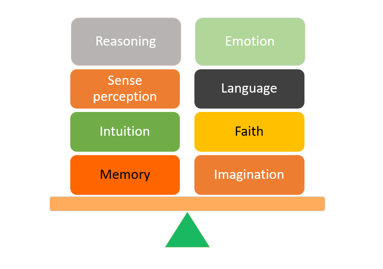
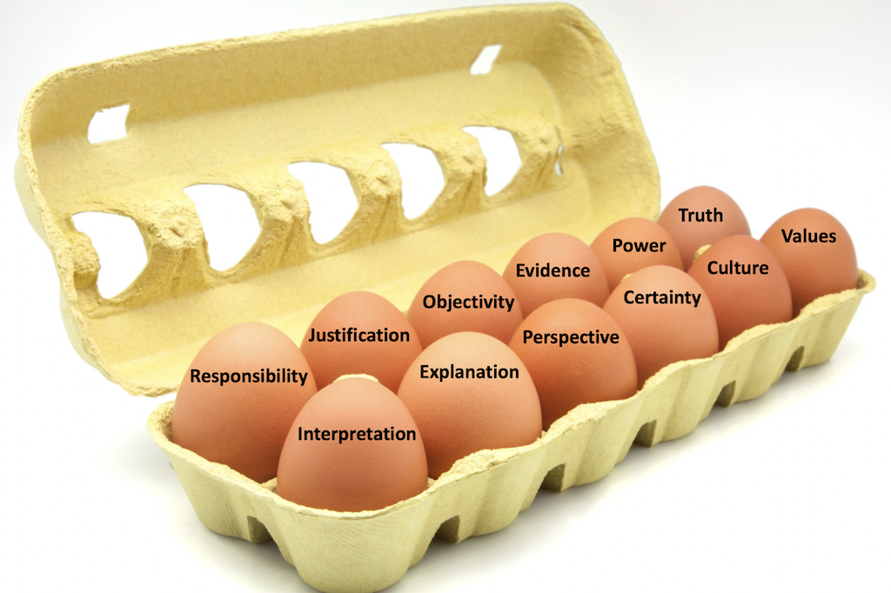
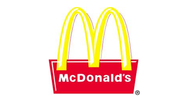
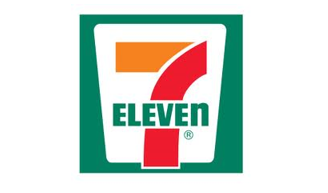
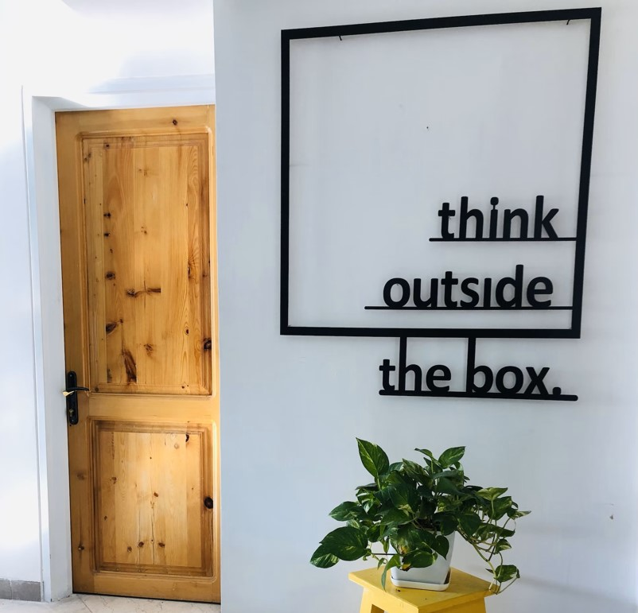

IB Docs (2) Team
IB Docs (2) Team

TOK & BM
"Real knowledge is to know the extent of one's ignorance."
- Confucius
“Do not feel absolutely certain of anything.”
- Bertrand Russell (1872 - 1970), British Nobel laureate
"You learn nothing from life if you think you're right all the time".
- Keanu Reeves, Canadian actor (b.1964)
The IB states that Theory of Knowledge (TOK) is a course about critical thinking and inquiring into the process of knowing, rather than about learning a specific body of knowledge. Hence, TOK is interdisciplinary in nature. Note that developing critical thinking skills is not the same as being critical (of knowledge, content or knowledge) in a negative way. Instead, critical thinking means we do not passively accept things that are read, heard or 'taught', but ask useful (probing) questions, support our ideas with evidence, argue coherently, and develop our thinking skills in the pursuit of knowledge.
"Real knowledge is to know the extent of one's ignorance." - Confucius (551 - 479 BC)
This quote by Confucius, the Chinese Philosopher, reminds us all that it's OK and quite normal to not know something and to be able to admit "I do not know."
It is OK to not know something, and certainly none of us are knowledgeable in everything. As educators (or students), we are often reminded about how being humble and open-minded in our pursuit of knowledge only but helps to clarify and broaden what we know. Students learn better if they are able to seek advice and guidance in support of their learning - be it the contents of the Business Management course, their Internal Assessments, Extended Essay and/or any other aspect of their studies.
No matter how knowledgeable we are (or think we are) we all inevitably have much more that we do not know. That is what the TOK course really is about - the pursuit of knowledge. As human beings, we all have limits, and knowing when we do not know something is far more powerful, and knowledgeable, than having an attitude of thinking that we know it all or know better than others.
So, true knowledge is not about what we know, or claim that we know, but also about the extent to which we realise we do not know.
It is useful to remember in TOK that knowledge can defined as being a justified true belief (in the words of Plato).
So, how do we know what we (think we) know? The answers you may hear from students include:
I worked it out (reasoning)
I feel it (emotion)
I saw it (sense perception)
Someone told me / I read about it (language)
I remembered it (memory)
I can sense it / I ‘just know’ (intuition)
I believe it (faith)
I created it (imagination)
These eight responses, or methods of knowing, can provide a useful framework for making knowledge claims in the study of IB Business Management: reason, emotion, sense perception, language, memory, intuition, faith and imagination.
Collectively, these eight methods were called the "Ways of Knowing", or WOKs, but are no longer a specific feature in the new TOK course (first assessment 2022). However, they are still a useful framework for making knowledge claims in IB Business Management.

A framework for making knowledge claims in DP Business Management
In the new Theory of Knowledge course, students study a core theme, optional themes, and areas of knowledge (AOK) using a tool called the “knowledge framework”. This knowledge framework consists of four elements:
scope
perspectives
methods and tools, and
ethics.
The five AOKs represent different categories of knowledge in the TOK course. These consist of (i) the arts, (ii) history, (iii) the human sciences, (iv) mathematics, and (v) the natural sciences.
The new TOK course also uses 12 key concepts as being of particular importance. The 12 concepts are:
Certainty
Culture
Evidence
Explanation
Interpretation
Justification
Objectivity
Perspective
Power
Responsibility
Truth, and
Values

One dozen TOK concepts
To read more about these twelve concepts, click the icon below.
You may not have noticed but TOK has changed. The main difference is that the framework of the TOK curriculum has shifted to become "concept-based." This means that the focus of the course is now on "big ideas." These big ideas are transdisciplinary in nature and help us to understand "why" we are learning the content.
The following section looks at the 12 concepts on which the TOK course is built. Some of the concepts link more directly to Business Management than others, but helping students to see how these concepts are relevant in our subject will help to support the transfer of their understandings and make TOK a more relevant and integrated part of their IB DP learning.
TOK: The 12 key concepts
Certainty Culture Evidence Explanation Interpretation Justification
Objectivity Perspective Power Responsibility Truth Values
Certainty
“What we know is a drop, what we don't know is an ocean.”
- Sir Isaac Newton (1643 - 1727), English mathematician and physicist
Unlike other areas of knowledge (AOK), certainty is not something that Business Management covers really well, given the continual changes in the external environment, for example.
In addition, the measurement of behaviour is problematic in the study of human resources. For example, there is no absolute certainty about the degree of discrimination in the recruitment process, the most effective leadership style, or what really motivates individuals in the workplace - not everyone wants promotion even if this comes with a pay rise, for example.
Nevertheless, the Business Management course covers many quantitative aspects of the discipline, which makes business decision making more measurable and objective. Quantitative techniques covered in the course, for example, include:
Budgets (HL only)
Cost to buy and Cost to make (HL only)
Decision trees (HL only)
Efficiency ratio analysis (HL only)
Force field analysis (HL only)
Gantt chartst (HL only)
Sales forecasting (HL only)
Stock control (HL only)
When trying to determine the level of certainty in business decision making, managers and leaders tend to rely on both qualitative and quantitative factors in order to increase the level of certainty in their strategic choices. This involves consideration of both internal and external factors.
Culture

Examples of aspects of culture in Business Management
"Those who cannot change their minds cannot change anything” - George Bernard Shaw (1856 - 1950), Irish playwright
Culture is embedded in the Business Management syllabus both as a key CUEGIS concept and subject content (Unit 2.5 Organizational culture - HL only). Nevertheless, remember that TOK is interested in how culture affects our knowledge of the world around us - not only from a corporate or business perspective. For example, the study of cultural dimensions is great for this, such as how uncertainty bias, gender norms, or power distance within an organization or society as a whole affects one's approach to knowledge.
Read more about culture as a key concept in Business Management by clicking the link here.
Evidence
“Great minds do not think alike. They challenge each other to think again.”
- Adam Grant (b. 1981), American author and organisational psychologist
This concept is highly applicable for Business Management. Evidence is the foundation of our curriculum as students are constantly being asked to evaluate the evidence in their learning as well as assessments, including:
- Paper 1 (Part B for SL and HL and Part C for HL)
- Paper 2 (Parts B and C for SL and HL)
- Internal assessment (for SL and HL)
- The extended essay in Business Management.
Not that when looking at evidence in Business Management, it is not just about evaluation of the data and information; students should be able to explain why we would use a certain type of evidence. In our course, students look at different market research methods:
- Methods/techniques of primary market research such as observations, interviews, questionnaires/surveys, and focus groups.
- Methods/techniques of secondary market research such as market analyses, academic journals, government publications, media articles, and case studies.
In addition to this, analysts use different techniques for data collection, including the use of driving and restraining forces in a force field analysis and consumer preferences and perceptions to create production position maps.
However, it is also important that students consider the value of anecdotal versus empirical research used in business decision making. As a humanities or I&S (Individuals and Societies) subject, there is always an element of human judgement and potential bias in tactical and strategic decisions in terms of one's behaviour as well as introspection about one's mental state.
This short video clip, featuring British comedian Joe Lycett’s parking ticket story, highlights the importance of evidence in any argument (in a humorous but self-explanatory way):
A final example is the use of quantitative vs qualitative data in Business Management. Students often argue that quantitative data is somehow superior to qualitative data as it informs decision making in a more objective and scientific way. This is definitely a TOK question worth exploring further ...
Explanation
"The ability to ask questions is the greatest resource in learning the truth.”
Carl Jung (1875 - 1961), Swiss psychiatrist and psychoanalyst
Explanations are our attempt to understand why people do what they do and behave the way that they do. Explanations may be based on local cultures (e.g. you got sick because you slept with your window open or with the fan blowing at you), errors in logic (decision being based on incomplete or asymmetric information, as well as illusory correlations), and/or empirical evidence.
We look most directly at this concept when we examine theories used in Business Management - such as the various motivation theories. In addition to theories, managers and leaders use Business Management models such as break-even analysis, the Boston Consultancy Group matrix, and stakeholder mapping (to deal with stakeholder conflict). These models address complex behaviours, such as the financial and non-financial factors that affect an individual or group's level of motivation. Aspects of culture also help to explain the behaviours and choices made by individuals and societies.
Some questions related to explanation, as a key TOK concept, include:
- How do we explain the reasons for change in order for key stakeholder to embrace the inevitable?
- Is it possible to explain whether "business ethics" or "corporate social responsibilities" are oxymora?
- What is more important in the corporate world - people, profits, or the planet?
- How do you explain to someone from a completely different culture the difference between right and wrong?
- What exactly is one's self-actualization?
- How can explain what your next thought or decision is going to be?
- What is the purpose of the word "the" in the English language?
- How do you explain to parents why their child is learning to work out the square root of fractions?
- How do you explain to parents why their child is learning Shakespearian English rather than financial literacy or coding in school?
- Why is it not humanly possible to physically fold a piece of paper in half more than 8 times?
Interpretation
The way we interpret business knowledge is essential to teaching and learning of the discipline. For example, what is our interpretation of a charity? The IB has charitable status. Your school may well have charitable status, even if it charges students school fees. What is a non-governmental organization? And how does an NGO (in your country) differ from a charity - is this distinction interpreted equally in different countries?
Another aspect of interpretation is influenced by culture. What is deemed or interpreted to be ethical or morally correct in one country or culture is not necessarily the case in others. What motivates people in one culture does not necessarily apply in other cultures.
Sense perception, a way of knowing something, is also subject to interpretation. For example, psychologists use ambiguous images (also known as reversible figures) as visual tools to demonstrate ambiguity by exploiting graphical similarities and visual interpretations between two or more distinct image forms. A well-known example is the image of My Wife and Mother-in-law:
The young girl-old woman illusion (otherwise known as "My Wife and My Mother-in-Law") is a reversible image in which we can see the side of a young lady's face with her head turned to the right or we can (also) see an old woman with a large nose and protruding chin.
There is debate about the origins of the image, which was featured in Puck, an American humour magazine, on 6th November 1915, with the caption "They are both in this picture - Find them." However, there is also evidence to suggest that a very similar image first appeared in 1888 on a German postcard.
Ambiguous images suggest that what we see first really depends on our perspective(s) and interpretation(s) of things.
A final example of interpretation is the use of statistical analysis in Business Management. There is much debate about what makes an ideal or acceptable sample size for market research purposes, which impacts how analysts interpret the significance of research findings and results. We can also interpret data through inductive and deductive methods of reasoning and content analysis. Enabling students to develop the skills to consider the value (benefits), as well as the concerns about different approaches to interpreting data, is an important foundation for critical thinking.
Watch this video about the use of P-values, which helps us to determine whether research data and results are actually of any meaning.
Justification
Justification refers to the process of making links between theoretical frameworks and choices. As stated in the Business Management Guide, "A knowledge question in business management challenges a statement, assertion or assumption about the subject that students believe to be true or take for granted. From a TOK perspective, students need to question these claims and how they are justified" (page 7).
There are several points in the Business Management curriculum where we explore this concept. In particular, "justify" is an AO3 command term in Business Management. To justify requires students to give valid reasons or evidence to support an answer or conclusion, such as justifying the reason(s) why Company X has decided to form a joint venture with Company Y.
For example, in human resource management, we might have students discuss which financial and non-financial factors are appropriate for workers in different industries or how managers decide which people to hire or fire and demote or promote. In marketing, we might discuss why a particular promotional mix may or may not be effective - or which form of above the line or below the line promotional method might be the most appropriate for a specific organization or product.
In addition, we ask students to justify throughout the course, be it in their methodology for the HL IA research proposal or in their CUEGIS Paper 2 essay. This includes deciding whether deception is justified in order to study cult behaviour, whether animal research is valid or ethical in the study of Alzheimer's disease, or whether it is even worth studying sex differences with regard to the brain.
ATL Activity (Thinking skills)
In some cultures, the following are associated with bad luck:
Walking under a ladder
- Breaking a mirror (said to bring 7 years of bad luck)
- A black cat crossing one's path
- The number 4
The number 9
The number 13
- Friday the 13th
- Opening an umbrella indoors
- A single magpie (bird)
Is there any form of justification behind these sorts of superstitutions? How might businesses respond to local and regional superstitutions?
Objectivity
As Business Management is a humanities subject (or part of Individuals and Societies within the IB Diploma Programme), where humans interactions and decisions are made, there are a lot of issues with objectivity. For example, can we be truly objective about aspects of conflict resolution, resistance to change in the workplace, the most effective management and leadership styles, workforce planning, staff appraisals, job losses including redundancy and dismissals, and strategies for sustainable business practices.
As mentioned above, cultural bias is an important part of all aspects of Business Management (after all, culture is a core concept in the course). For example, the five prescribed motivation theories in the syllabus are all works of male American scholars. Does this skew our understanding and objectivity of what motivation is and how people are motivated in the workplace? Another example comes from marketing, when we consider the role of researcher bias which can distort objectivity in the analysis and interpretation of data collection.
Ethics, as a CUEGIS concept, can also cloud objectivity in the corporate world. Is "business ethics" an oxymoron? Does the notion of corporate social responsibility distort the level of objectivity in business decision making?
Perspective
The IB curriculum is designed to encourage students to look at all aspects of Business Management from multiple perspectives, including observing these through a cultural lens. In line with IB philosophy, it is important for students to understand that although they may be beyond the scope of our taught curriculum, there are other approaches and perspectives to the discipline of Business Management, such as psychological, economic, political, and indigenous approaches to the study of the subject.
Areas of the Business Management syllabus where alternative perspectives are examined include:
- Stakeholder conflict
- How cultural differences may impact on communication
- The influence of ethics and culture on leadership & management
- Sources of conflict in the workplace
- Approaches to conflict resolution
- Ethical & cultural differences and how they influence relations in an organization
- How innovation, ethics and culture influence marketing
- Product position maps (perception maps)
- How organizations differentiate themselves
- Reasons for a specific location of production
- Case studies in crisis management
Case Study 1 - Shrinkflation as a pricing strategy?
To maintian competitiveness, rather than raising prices, some firm have adopted a shrinkflation strategy. This occurs when businesses charge the same price for smaller portion sizes of their products, such as toilet manufacturers reducing the number of sheets without reducing the price. In real terms, this raises the price per unit but without customers necessarily noticing this change.
Watch this short feature from CNN about shrinkflation in the US economy (you only need to watch up to 2 mins, 30 secs).
Perspective is one of the 12 key concepts in the TOK course. Is shrinkflation perceived to be in the best interest of consumers or is it simply an unethical business practice?
Power
In TOK, the idea of power is how knowledge can be power. Think about this concept in terms of how trade secrets, brand reputation, and customer loyalty can allow businesses to have market power, as well as allowing society to change and develop.
Another aspect of power is the degree of autonomy in the workplace. A potential discussion area here is whether autonomy always works best in the workplace. How can we know if empowerment, delegation, decentralization, and greater autonomy really do lead to increased productivity and motivation or whether this simply causes abuse of power?
Finally, power as a concept can be discussed from the perspective of the government. Governments play a key role in the business world. To what extent does the government use its default power to support businesses, including business start-ups? Is the government concerned with monopoly power in the private sector? Why/not? Is increased competition always in the best interest of the general public?
Responsibility
This concept seems to be very much linked with power, ethics, and sustainable business practices. If students are the leaders of the future, how can they apply knowledge and research in Business Management in order to promote change (for the better) and sustainable development? What are the ethical and social responsibilities, if any, of business organizations?
Responsibility is applicable in numerous areas of the Business Management syllabus, including discussions about:
- Ethical objectives & corporate social responsibilities
- Stakeholder conflict
- Ethics and HR practices & strategies
- The influence of ethics on leadership & management
- Approaches to conflict resolution
- The principles & ethics of accounting practice
- The importance of budgets for organizations
- How ethics and culture influence marketing
- Operations management strategies and practices for sustainability
- Crisis management & contingency planning (HL only).
Truth
One of the fundamental understandings of hypothesis testing is that we can never "prove" anything, we can only disprove something. Knowledge is not finite nor definitive - what is deemed to be "truth" today might not be the case tomorrow. As they say in the corporate world, the only constant is change. So, by discovering an alternative explanation, there may be more evidence showing that the original explanation was inadequate. For example, whilst mining for fossil fuels and oil production were once highly profitable industries, this is no longer true as mining and oil companies seek to diversify and invest in greener production techniques and technologies.
Truth is very much linked to key concepts of objectivity and evidence. However, truth become challenging to prove or substantiate when human behaviours and emotions come into play. For example, there is no absolute measure for normality, mental health, or intelligence. So, when discussing topics such as human resource management, we are studying human behaviours in and between cultures in a rather subjective framework that challenges the idea that there are "truths" in all areas of Business Management. For instance, how do recruiters define what is truth during a job interview? How can they know whether someone has lied on their application form? Another area that Business Management students often struggle with when learning about market research is that researchers may assume that participants simply do not tell the truth in research, but how do we know whether this is the case, i.e. that respondents actually and deliberately lie in their responses?
Marketing is used to inform, remind, and persuade consumers to buy a firm's products. However, how do we know what truth really is when it comes to advertising, promotional offers, and other marketing strategies used by businesses in an attempt to make us spend our money? Take a look at the McDonald's photoshoot video below for an example about perceived truth in the world of food marketing.
Values
The concept of values is very much linked to culture and perspectives, as well as ethics as an area of knowledge (AOK). The topics and theories that we study have certain values and assumptions that often influence both what we choose to think and what we think we know.
In addition, values simply change or evolve over time, such as social attitudes towards women and/or minority groups in the workforce. The change in values has an impact both on human behaviour and how we study it. For example, in many countries, there has been a move from using the term "mental illness" to "mental health" in the workplace - and both the way we define disorders and how we treat them has changed. Are firms that adopt a diversity and inclusive policy regarding workforce planning acting in response to their true values or is this tokenistic, and how do we know this?
Social norms are also a focus of the TOK and Business Management courses. We look at how globalization (as a CUEGIS concept) plays a role in the changing of values in societies across the corporate world - especially with regard to sustainable business practices, ethical objectives and corporate social responsibilities - and how changes in values may have an effect on one's subjective well-being.
To read more about the new TOK course (introduced in 2020), click on the icon below.
The Theory of Knowledge (TOK) was reviewed and published again in 2020 for first exams in 2022. As DP Business Management teachers, we are expected to make links to TOK, helping students to see the interconnectedness of their learning. Business Management lends itself very easily to TOK as it crosses traditional knowledge and discipline boundaries and encourages the understanding of different perspectives through the lens of the environmental value systems. On this page we provide an overview of the TOK course which can be used as a cheat sheet when planning your units. In Managebac (if your school uses this), you can tick your area of focus and explain how this is a focus.
The Theory of Knowledge Course
The Theory of Knowledge Course provides students with an opportunity to explore and reflect on the nature of knowledge and the process of knowing. It embraces the exploration of tensions, limitations and challenges relating to knowledge and knowing while also encouraging students to appreciate and be inspired by the richness of human knowledge, considering the value of different kinds of knowledge. Reflecting on knowledge and knowing can be beneficial so that knowers are more aware of their own assumptions and can help to overcome prejudice and promote intercultural understanding.
There are three main strands to the course; the core theme, two optional themes and the Areas of Knowledge. The lenses used to study these are knowledge questions and the knowledge framework. There are also twelve concepts to help deepen understanding.
The Core Theme - Knowledge and the Knower
Students reflect on themselves as knowers and thinkers and the communities of knowers to which they belong. They reflect on what shapes their perspectives as a knower, where their values come from and how they make sense and navigate the world.
Optional Themes
Two themes are looked at in depth. These play a key role in shaping people's perspectives and identities.
| Knowledge & Technology | Knowledge & Language | Knowledge & Politics | Knowledge & religion | Knowledge & Indigenous Societies |
|---|---|---|---|---|
| Focuses on issues relating to the impact of technology on knowledge and knowers and how technology can help and hinder our pursuit of knowledge. It examines the ways that technology can be seen to shape knowledge creation, knowledge sharing and exchange and even the nature of knowledge itself. | What role does language play in our lives and how does it influence thought and behaviour? How does language allow knowledge to be shared and what role does it play in the dissemination of knowledge, including to future generations? How do power and language interrelate? | How knowledge is constructed, used and disseminated is infused with power and politics. It is also related to issues around power and oppression. New technology may give political actors new powers and be used in persuasion, manipulation, misinformation and propaganda? | Religion can have a significant impact on how we view the world and people have very personal and deeply held convictions regarding religious matters. How does religion affect the way that knowledge is exchanged between individuals and groups. How does religion relate to the concept of evidence? | Indigenous peoples have faced historic and ongoing injustices and are very diverse. How is knowledge deeply embedded in the culture and traditions of particular communities of knowers. How does power affect hierarchies of how knowledge is classified and validated? |
Areas of Knowledge (AOK)
These are specific branches of knowledge, each with a distinct nature and sometimes different methods of gaining knowledge. In the TOK course, there are five compulsory areas of knowledge.
| History | Human Sciences | Natural Sciences | Mathematics | Arts |
|---|---|---|---|---|
| How can we talk meaningfully about a historical fact or with any certainty about anything in the past? How reliable is documentary evidence especially when sources may be incomplete or there are contradictions? Historians are influenced by their historical and social environment and as an interpretative discipline how do we allow for multiple perspectives and opinions? | Psychology, social and cultural anthropology, economics, political science and geography share a common focus on the study of human existence and behaviour but there is a large diversity of approaches. How do the methodologies in the human sciences compare to those in the natural sciences and how do they seek to provide objective knowledge or do they do this? | Seen to rely on evidence, rationality and the quest for deeper understanding, with a specific use of “theory”. How do scientific methodologies generate evidence that is seen as highly reliable? As scientific knowledge develops it can lead to revolutions and paradigm shifts. The scientific community acts with self-regulation but how reliable is this? How do we prioritise funding for scientific research? | Seen to have a degree of certainty that is unmatched by other areas of knowledge. Founded on a set of more or less universally accepted definitions and basic assumptions. Does a mathematical treatment of a topic lend it rigour? Mathematical logic can require great leaps of imagination so is there a role for elegance and beauty in mathematical value? How does mathematics relate to the world around us? What is proof in mathematics? | Includes visual arts, theatre, dance, music, film and literature but with great diversity between these disciplines. Interpretation is key. How is meaning ascribed to a work of art? Was it done with intension by the artist? How key is the role of the audience? Does art shed light on the human condition and act as a vehicle for social criticism and change? Are there ethical constraints? How does culture impact the production of art? |
Lens: Knowledge Questions and the Knowledge Framework
These are provided to help explore the three areas of the TOK course and are organised into a framework of four elements. Knowledge Questions are about knowledge, contestable and draw on TOK concepts.
| Scope | Perspectives | Methods and Tools | Ethics |
|---|---|---|---|
| How does this AOK or Theme fit within the totality of human knowledge and how does it try to address problems? | How does your perspective and that of other groups of people inform an approach to this AOK or Theme and how does it change over time? | What methods, tools and practices are used to produce knowledge? How have these tools changed as a results of technological development? | How do facts and values and ethical and epistemic values relate in the quest for knowledge? How does knowledge relate to inequality and justice? |
Assessment
There are two assessment tasks in the TOK course.
| The TOK Exhibition | The TOK Essay |
|---|---|
| This assesses the ability of the student to show how TOK manifests in the world around us. It is an internal assessment component, externally moderated by the IB and counts for 33% of the final TOK grade. | This is a more formal and sustained piece of writing in response to a title focused on the areas of knowledge. It is externally assessed by IB Examiners and counts for 67% of the final TOK grade. It is an essay of 1,600 words and must be on one of the six prescribed titles issued by the IB for each examination session (released in September of the second year of the DP). |
The twelve concepts
Exploring the relationship between knowledge and these concepts can help students to deepen their understanding, as well as facilitating the transfer of learning to new and different contexts.
Evidence | Certainty | Truth | Interpretation |
Power | Justification | Explanation | Objectivity |
Perspective | Culture | Values | Responsibility |
All information is adapted from the Diploma Programme Theory of Knowledge Guide (2020). International Baccalaureate Organization.
Have you ever wondered why your burgers at McDonald’s never look like the ones in their promotional posters and adverts? Watch this “Behind the scenes at a McDonald's photo shoot” to find out why:
The 'fake food' industry is a rather large one, as outlined in this 5-minute video from Business Insider which tells us about the $90 million industry in Japan. Fake food samples, called "sampuru" in Japanese, can be seen in most restaurant windows in Japan. The realistic plastic foods help with language barriers and advertising the various food items on a restaurant's menu, but they are also a prominent and historical aspect of Japanese culinary culture.
Case Study 2 - Did Cristiano Ronaldo really cause Coca-Cola to lose $4 billion?
In June 2021, just before Portugal’s Euro 2020 football championship opening match, Cristiano Ronaldo put aside two Coca-Cola bottles placed in front of him and said “agua” (water) while smiling to the journalists during the pre-match press conference. The reaction caused the news media to claim that Ronaldo, the world's highest paid athlete at the time, was solely responsible for wiping a staggering $4 billion from Coca-Cola’s market value. However, is this really true?
What reasons might have caused such a knowledge claim to have been accepted as truth? How do post-truths (which are not based on emotions, personal beliefs, or public opinions) change what we think we know?
The knowledge claim reported in the mass media and spread via social media was based on Coca-Cola's share price dropping from $56.16 to $55.55 on 14th June 2021, resulting in the company "losing" $4 billion in market capitalization (value). However, were these two events linked in any way or is this case an example of correlation rather than causation?
The pre-match conference happened at 3:45PM CEST, which meant it was only 9:45AM in New York (where Coca-Cola's shares are traded). The stock price had already fallen to $55.25 at 9:45AM from the previous day's close of $56.16, i.e. the company's market value had already been down by $4 billion before Ronaldo's actions. By the end of the day, Coca-Cola's share price had increased to $55.55, i.e. it had gained $1.3 billion since 9:45AM on that day.
Another consideration is that Coca-Cola had distributed dividend payments to its shareholders on 14th June, and stocks generally fall in price after any dividend payments are made (there had been a downward trend in the stock price during the week before the payout of dividends).
In the modern era of social influencers, the social media landscape, and 'fake news', it is far too easy to believe non-truths are real. Also, Coca-Cola has a huge presence in the bottled water industry with brands such as Dasani, Aquabona (Bonaqua), Vital, and Smart Water.
Remember, the IB encourages us all to be critical and reflective thinkers, especially about knowledge itself.
ATL Activity 1 - What do you know, and how do you know you know?
"Sometimes people don’t want to hear the truth because they don’t want their illusions destroyed." - Friedrich Nietzsche (1844 - 1900), German philosopher
Write down 3 statements, each beginning with “I know ….”, such as "I know what the smallest three digit number is."
Some examples might include:
- I know what my name is
- I know my date of birth
- I know which day it is today
- I know I love my parents
- I know my parents love me
- Be prepared to share your statements with the group.
- Now think – how do you know those 3 things?
Using the above examples, the reasons might include:
- I know what my name is - Language (my parents told me); Reasoning (that is the name my parents, siblings, friends and teachers call me by)
- I know my date of birth - Reasoning (I celebrate my birthday on the same day each year)
- I know which day it is today - Reasoning (I just checked my Diary/Calendar); Language (Alexa just told me!)
- I know I love my parents - Emotion (I feel love for my parents)
- I know my parents love me - Faith (I believe this is the case!); Emotion (I feel their love for me); Intuition (it's obvious!); Language (they tell me that they love me); Perception (from what I can see, they clearly love me!)
Note: If you thought you knew what the smallest three-digit number was, you may be wrong. The answer is not 100, but a minus (negative) number.
A much smaller 3-digit number than 100 is -999!
ATL Activity 2 - Thinking isn't thinking unless you think outside of the box, I think?
"We all jump to conclusions; we all fail to examine and test our ideas because of our personal attitudes." ~ John Dewey, How We Think (1910)
Have a look at these scenarios and ask yourself how can this be?
a. A cowboy came to town on Friday. He stayed for just three days and left on Friday. How can this be?!
Friday is the name of his horse! Knowledge (and critical thinking) are often constrained by our inability to think beyond what we (think we) know.
b. Twelve pears were hanging high in a tree. Twelve men passed the tree. Each took a pear and left eleven hanging on the tree. How can this be?
Each was the name of the (only) man who took a pear from the tree! Our pre-conditioned and current understanding of language are limits to knowledge. Why can't someone be called Each? Names can have very different meanings or purposes around the world. For example, many females are named after flowers, such as Rose, Lily, Flora, Daisy, and Jasmine.
c. A man wanted to enter an exclusive club but didn’t know the password. A member knocked on the door and the doorman said, “12”. The member replied, “6” and was let in. A second member came and the doorman said, “6”. The member replied, “3” and was let in. The man had heard enough and walked up to the door. The doorman said ,“10” and the man replied, “5”. But he wasn’t let in. What should he have said?
The doorman lets in those who answer with the number of letters in the word the doorman says, e.g. “Twelve” = 6 letters, and “Six” = 3 letters, so for “ten” the answer should have been ‘3’!
Quite often, we see numbers and automatically think the answer should be quantitative. Again, such a mindset in our thinking could limit the potential to understand and to acquire new knowledge.
ATL Activity 3 - Can you rely on your memory as a method of knowing?
Can we rely on our memory as a way of knowing…? How aware are you of the correct spelling of the following multinational brands?
Brand 1:
| a. McDonald’s | b. MacDonalds |
| c. McDonalds | d. Mcdonalds |
a. McDonald's

Brand 2:
| a. Coka Cola | b. Coca Cola |
| c. Coca-Cola | d. Coca cola |
c. Coca-Cola
Brand 3:
| a. 7-11 | b. 7 Eleven |
| c. 7-Eleven | d. 7 ELEVEn |
d. 7 ELEVEn (notice the little 'n')

Brand 4:
| a. MARKS & SPENCER | b. Marks & Spencer |
| c. MARKS AND SPENCER’S | d. Marks & Spencer’s |
a. MARKS & SPENCER
Brand 5:
| a. Starbucks | b. STARBUCKS |
| c. Starbuck’s | d. STARBUCK’S |
b. STARBUCKS
Brand 6:
| a. Gillette | b. Gilette |
| c. Gillete | d. Gilete |
a. Gillette
Brand 7:
| a. Blue Ray | b. Blue-ray |
| c. Blu-ray | d. Blue Ray |
c. Blu-ray
Brand 8:
| a. Ben and Jerrys | b. Ben & Jerry's |
| c. Ben and Jerry's | d. Ben & Jerrys |
b. Ben & Jerry's
Brand 9:
| a. eBay | b. e-Bay |
| c. ebay | d. e-bay |
c. ebay
Brand 10:
| a. Krispy-Kreme | b. Krispy Kreme |
| c. Crispy Creme | d. Crispy Cream |
b. Krispy Kreme
Download the PDF version of this activity to use with your students by clicking the link  here.
here.
ATL Activity 4 - The power of colours
Why do so many fast food chain logos contain the colour yellow? Ask students to read this article for some possible answers.
This short video clip should also help with the above question, as a professor outlines how colour influences brand identity.
ATL Activity 5 - Ethics, Marketing and Knowing what is acceptable
Marketing ethics are covered in Unit 4.2. Ethics can be defined as the moral codes of conduct that drive business behaviour. Ethical business behaviour is what is deemed by society to be morally acceptable, i.e. what is “right” from society's perspective. By contrast, unethical business behaviour is what society regards as being immoral, unjust and unfair, i.e. what is “wrong”. By contrast, unethical marketing arises when moral codes of conduct are overlooked or when marketing activities (such as market research or advertising campaigns) cause offence to the other stakeholder groups and/or the general public.
Some class discussion points relevant to the study of marketing could include:
Should marketers refrain from advertising high-sugar and high-energy drinks, such as Coca-Cola, Red Bull and Lucozade, at school-age children?
Is it acceptable for airlines, theme parks, and cinemas/theatres to raise their prices (by using surge pricing) during school holidays?
Is it ethical for businesses to use computer games to advertise directly to children?
Should marketers be allowed to advertise alcohol and tobacco?
Should ambiguous and/or unproven advertising claims be banned?
For details about how marketers fool us with their marketing, read this interesting article, titled “The Art of Deceptive Advertising”.
Read this Business Insider article about Red Bull being sued for $13 million due to false and misleading advertising claims that their drinks "give you wings".
Ask students to consider the extent to which deception is unethical or illegal. Does this depend on cultural and societal norms?
Taking this one step further, ask student to address this TOK question in the context of marketing (or Business Management in general:
Are the values on which ethics are based universal or do they depend on culture?
ATL Activity 6 - Class discussions
What role do emotions play in business decision-making?
Are emotional leaders more or less effective than less emotional ones?
Is intuition or science more important in the decision-making process?
Can we ever truly know what others think? Does this matter?
Do cultural biases limit or improve the effectiveness of decision-making?
Get students to consider this question from different areas of the syllabus, such as advertising and marketing, finance and/or human resource management.
Case Study 3 - Language and time
Language is a traditional form of knowing, which changes and develops over time. For example, words such as apple, blackberry and orange were - once upon a time - only used to refer to fruits (rather than a well-known innovative companies that operate in the telecommunications industry!)
Watch this classic humorous video clip to see how the use of language changes over time, as well as confuse people in the process:
Another example of language is the use of new terminology which forms ways of knowing in society. For example, prior to the Covid-19 (coronavirus) pandemic, most people would never had used the following words / phrases:
Contract tracing
Coronacation
Coronials
Covideoparty
Covidiot
Distance learning
Flatten the curve
Furlough
Lockdown
Loxit
Morona
New normal
Personal protective equipment (PPE)
Quarantine vs. isolation
R rate
Second wave
Social bubble
Social distancing
Staycations
Teams (Microsoft)
Track and trace
Zoom / Zooming / Zoom Boom
To see the meaning of the terms above, have a look at these two websites, which go into more detail about language and how language changes/evolves over time; great for TOK discussions.
The pandemic also caused the meaning of some words to change too:
Being negative was actually better than being positive.
Two negatives did not (thankfully) make a positive.
A false positive was actually a good thing.
LFT no longer stood for Latest Finish Time but Lateral Flow Test.
Corona was more than just a beer brand.
Delta (Air Lines) wasn’t the only thing airborne...
ATL Activity 7 - Language and Business Management
The corporate world is full of strange language, which can be rather confusing for students. Some examples are shown below. Find out what these terms mean.
| Business term / phrase | Meaning |
| The Big Cheese | The boss! |
| Natural wastage | People who leave (quit) their jobs and/or who retire from their jobs but are not replaced. |
| Deep dive | Brainstorming. |
| Low Hanging Fruit | An easy win / something beneficial yet easily accomplished. |
| Move the Needle | |
| Freemium | A pricing strategy where the “basic” version of a product (good or service) is offered free of charge, such as Zoom or Dropbox. Extra functionality requires an upgrade to a premium version, for which a price is charged. |
| Crisis planning | No, this doesn't mean planning a crisis(!) but planning what to do in the event of a crisis that could threaten the survival of the business. |
| Make Hay | Similar to the proverb 'to strike while the iron is hot', this means to take advantage / take action whilst the opportunity exists. The phrase comes from the saying "Make hay whilst the sun shines." |
| Boil the Ocean | This means that something (a particular task, job or project) is a waste of time. |
| By the book | To follow the rules, regulations and policies of the corporation. |
| Corner the market | |
| The elephant in the room | An obvious topic, problem or controversial issue that no one wants to discuss in a meeting. |
| Between a rock and a hard place | |
| Bag egg | An untrustworthy person / someone in the organization or linked to the firm that cannot be trusted. |
| Glass ceiling | Refers to an unofficially acknowledged barrier to the career advancement of certain people, usually women and ethnic minority groups. |
| It’s a steal | Refers to something that is perceived to be a real bargain. |
| Red tape | |
| Under the table | Often used to refer to unofficial business (no formal records), including illegal trade deals. |
Even in the IB Business Management course, the language used is often confusing. For instance, consider the examples of oxymora below:
Business ethics
Calculated risks
Constant change
Crisis management
Fair trade
Falling inflation
Flexible budgets
Free trade
Healthy competition
Irregular trends
Known (certain) risks
Mass customization
Negative growth
Negative income
Not-for-profit organization
Old news
Original copy
Paid volunteers
Real potential
Retired workers
Safety hazards
Unbiased opinions
Unemployed workers
Virtual reality
Waste management
Zero defects
As teachers, we often say things naturally without necessarily realising that students - especially those who do not speak English as their mother tongue - may be very confused. Have another look at the words above and consider how many of these may be used, and in which contexts, in your classrooms. Are there alternative / better ways for us to communicate business management jargon / terms with our students?
But it's not just the corporate world that has problems with language. Not directly related to Business Management, but certainly useful fot TOK discussions, have a read of these 25 statements to see how your grasp of the English language really is (I struggled with No. 15 initially). Click the icon below to read the statements.
Why The English Language Is Difficult To Learn...
The bandage was wound around the wound.
The farm was used to produce produce.
The bin was so full that I had to refuse more refuse.
We must polish the Polish furniture.
The soldier decided to desert his company in the desert after eating his dessert.
I decided to present the presentation.
A bass was painted on the side of the bass drum.
When shot at, the dove dove into the bushes.
I did not object to being given that object.
The insurance was invalid for the invalid.
There was a row amongst the oarsmen about how to row.
They were too close to the door to close it.
The buck does funny things when the does are present.
A seamstress and a sewer fell into the sewer.
To help with planting, the farmer taught his sow to sow.
The wind was too strong to wind the sail.
After a number of injections, my jaw got number.
Upon seeing the tear in the painting, I shed a tear.
I love to read; I read a great book recently.
I had to subject the subject to a series of tests.
How can I intimate this to my most intimate friend who, to some people, is a fiend?
I looked at a strange orange.
She took a break for breakfast.
I met her here, where we usually meet, but neither Neil nor Mary turned up.
Although I made a thorough search through the rough by the lough, I couldn’t find my golf ball, as it had landed on the bough of a tree. It was so cold that day that I developed a cough with hiccoughs and so I bought some medicine.
Source: Louis G. Radford (2007)
Our own use of the English language will always make sense to ourselves - but make an added effort to consider your students and what they might or might not understand when we say what we say.
ATL Activity 8 (Thinking skills) - What exactly is the English language?
English is indeed a challenging language to grasp, as demonstrated in ATL Activity 7 above. Despite English being the common language of those residing in the UK, the USA, and Australia, people still get confused due to the different meaning of different (English) words in different parts of the world.
Have a look at the words below and see if you know what these are referred to as in the UK, the USA, and Australia.
British (UK) English | American (US) English | Australian English |
Chips | ||
(Hot) chips | ||
Biscuits | ||
Tractor trailer | ||
Apartment | ||
Toilet | ||
Forest | ||
Swimmers (or bathers) | ||
Sweets | ||
Bangs | ||
Supermarket | ||
Duvet | ||
Bell peppers | ||
Thongs | ||
Petrol station | ||
ABC store (alcohol bottle controlled state) store | ||
Gum boots | ||
Trousers | ||
First floor | ||
Freeway (highway) | ||
| Jumper | Sweater | Jumper |
It's not just the spoken (English) language that causes confusion, as the written language can be just as confusing. Click the icon below to see the 20 most misspelled (misspelt?) words in the English language. Personally, I have always struggled with #11!
20 most commonly misspelt words in English
1. Separate
2. Definitely
3. Manoeuvre
4. Embarrass
5. Occurrence
6. Consensus
7. Unnecessary
8. Acceptable
9. Broccoli
10. Referred
11. Bureaucracy
12. Supersede
13. Questionnaire
14. Connoisseur
15. A lot
16. Entrepreneur
17. Particularly
18. Liquefy
19. Conscience
20. Parallel
Source: Oxford University Press
Case Study 4 - Why ordering food in English can be so confusing
Bombay Duck, an Indian delicacy, is made using fish (or more specifically using lizardfish).
Buffalo Wings are, of course, made from chickens not buffalos. The name comes from Buffalo, New York, where the chicken wings first appeared in 1964.
The California roll, the most popular sushi rolls in the USA, was inverted in Canada by Vancouver-based, Japan-born sushi chef Hidekazu Tojo in the 1960s.
Doughnuts were not invented in the USA but got there via Dutch settlers in the decades after the American Revolution (1775 - 1783). Dutch customs brought to New York (or New Amsterdam as it was first called) included the making of fried dough balls, known as oliekoecken, or oil cakes, which dates back to the 17th Century.
Duck sauce, used in Chinese cuisine, is not made from duck at all but with fruits such as apricots, plums, or peaches combined with ginger.
Eggplants (also known as aubergine or brinjal) have no eggs at all. The eggplant is actually a purple vegetable that is related to the tomato family.
French fries did not originate from France, but Belgium.
French toast is not French either - historians date the invention back to ancient Rome.
German Chocolate Cake is not German - well, it is to some extent as it was created by American baker Samuel German in 1852.
The hamburger contains no ham, but are beef patties. The hamburger is an American cultural export, although the idea did come from German emigrants from the city of Hamburg, a major port city in northern Germany.
Jaffa Cakes are biscuits, not cakes. They were introduced by the British biscuit manufacturer McVitie and Price in 1927 and named after Jaffa oranges.
Lady fingers (also known as okra) is a curved, cucumber like green vegetable that is often used in Asian cooking.
There is no meat in minced meat used to make minced pies. Instead, it is made of a sweet, spicy mixture of finely chopped apples, raisins, spices, and rum or brandy.
Mountain chicken are not chicken, but giant ditch frogs used to create a popular dish in the Caribbean islands of Dominica and Montserrat.
Peanuts are not nuts. Despite the name, peanuts do not grow on trees like other nuts but on vines, as with beans. Hence, peanuts are a type of legume.
Prairie Oyster is a drink used as a hangover cure.
Rocky Mountain Oysters are not oysters at all - but deep-fried testicles from bulls, pigs or sheep.
Singapore-style Noodles (or just Singapore Noodles) was not created in Singapore, but by chefs in Hong Kong.
TOK - Does spelling really matter?

Theory of Knowledge is about questioning what we (think we) know. For example, students will have been taught about the importance of spelling, punctuation, and grammar in their written work. However, just how important is it really?
Note: please do not try this with your external assessments!
TOK presentations
"How clever you are, to know something of which you are ignorant."
- Jane Austen (1775 - 1817), English novelist
Watch this fascinating TED Talk about how to speak so that people want to listen – useful prior to your students' own TOK presentations!
You can also download the Subject Brief for the Theory of Knowledge course here or from the MyIB / Programme Resources Centre portal.
Other suggested TOK resources
"It requires troublesome work to undertake the alteration of old beliefs."
- John Dewey, How We Think (1910)
Bertrand Russell’s Ten Commandments of Critical Thinking
Hodder Education's Theory of Knowledge Fourth Edition Student eTextbook
Return to The IB Diploma Core homepage

 Twitter
Twitter
 Facebook
Facebook
 LinkedIn
LinkedIn